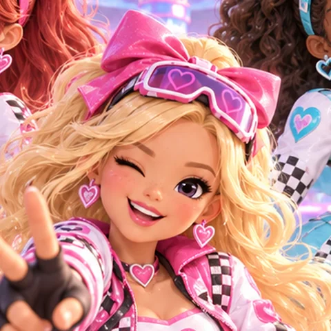
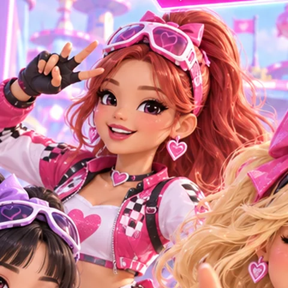
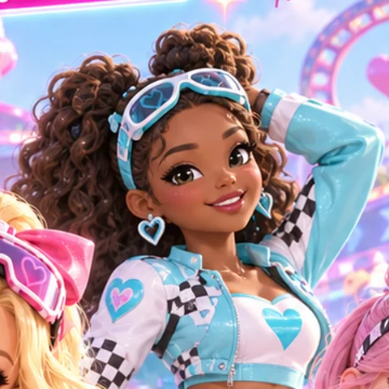
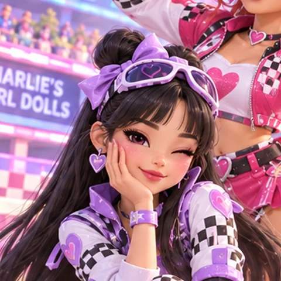
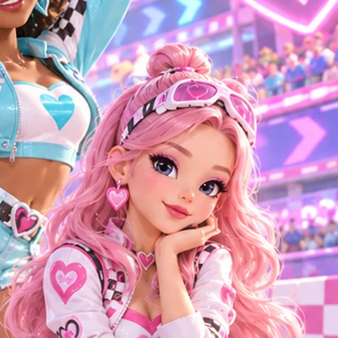
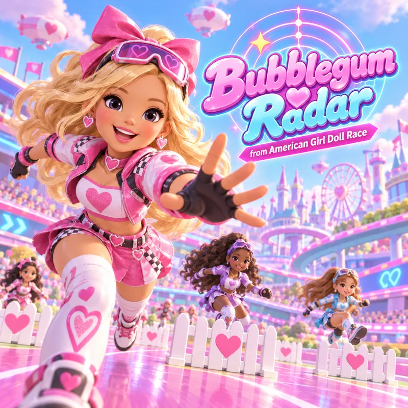
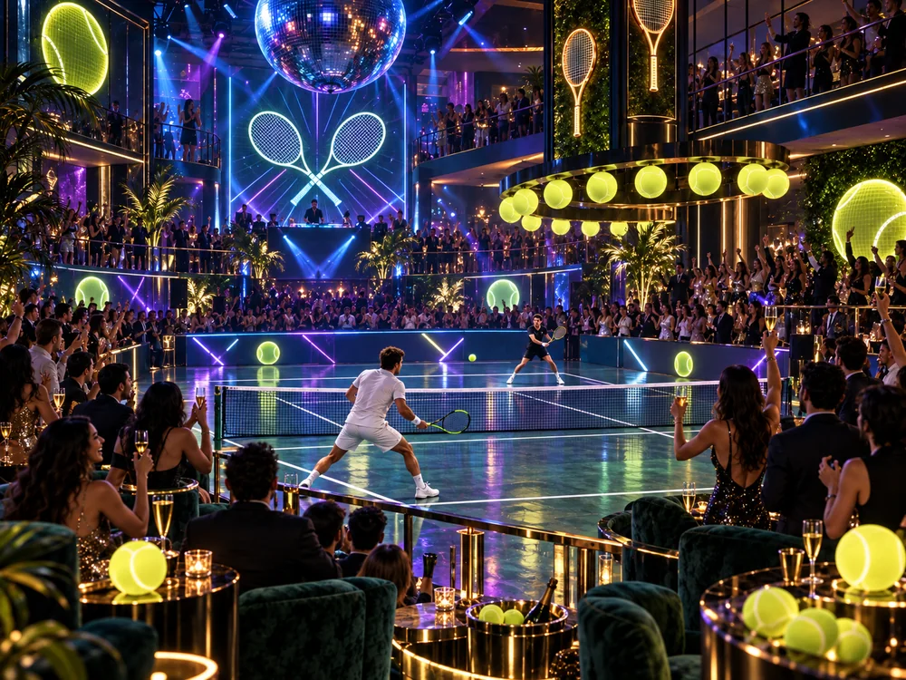

Charlie's Girl Dolls
♥ Creators of Bubblegum Radar ♥
Five girls, one pink speedway, and a chorus you can shout from the grandstand. Sweeter. Faster. Together.
Who is Charlie?
Nobody has met Charlie yet. Charlie is the voice on the intercom that counts the girls in before every take. The girls are the band.
They started as the halftime act at a doll-racing circuit, the kind of show where the racers wear heart-shaped goggles and the hurdles are white picket fences. Five girls were meant to fill three minutes between heats. The crowd would not let them leave.
The sound is bubblegum with a turbo: candy-bright synths, stacked harmonies, a chant in every chorus, and a beat that runs at exactly the pace of a girl in platform sneakers taking a hurdle.
- MembersFive
- Debut singleBubblegum Radar
- ColoursPink, lavender, sky, checkered
- MottoRace · Dream · Shine · Together
The dolls
-

Bomi
Leader · main vocal · pink
Loud, first off the line, winks at the camera on every chorus. Wrote the shout in Bubblegum Radar.
-

Rina
Main dancer · rap · hot pink
Choreographs everything and treats the pit lane as a runway.
-

Zoe
Vocal · sky blue
The high harmony on every track. Sings the bridge alone and makes the whole stadium go quiet.
-

Yuna
Rap · producer · lavender
Builds the beats on a laptop in the blimp and pretends not to care about the crowd. Cares a lot.
-

Cheri
Harmonies · visual · white
The calmest person on the grid. Hums every melody before it is a song.

Music
Five songs for the race, one for the court. Two are up on streaming; the rest follow them there.
Now playing —
That recording could not be reached. The race songs stream from the game; the single lives with this page, once it lands.
New single · not from the game
Matchpoint Midnight
The dolls took a night off the speedway and wrote a song about a tennis final that starts at midnight. A glass court under a disco ball, neon rackets on the wall, a crowd in sequins holding its breath on every serve.
